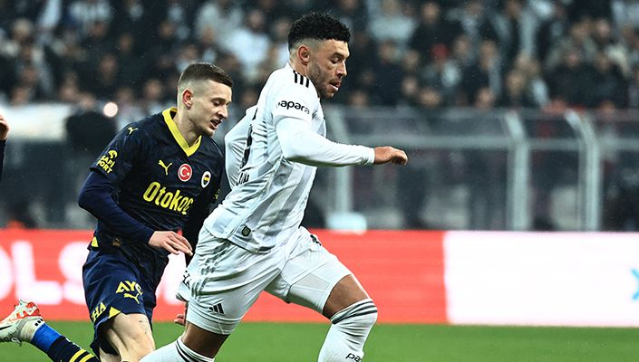
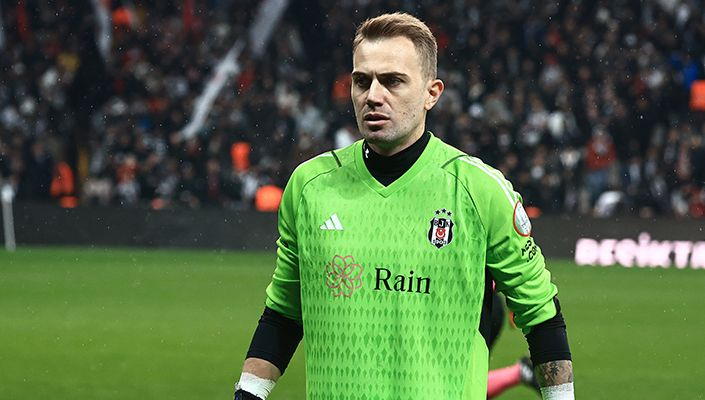
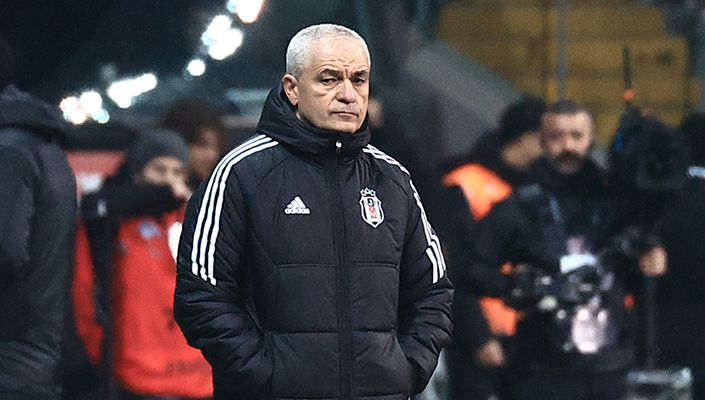
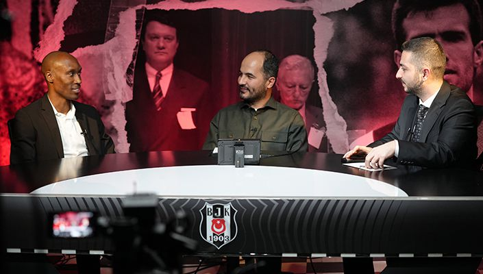

Hasan Arat, BJK Akatlar Spor Kompleksi’nde gerçekleştirilen Olağanüstü Seçimli Genel Kurul Toplantısı’nda 7271 oy alarak Beşiktaşımızın 35. Başkanı seçildi. 11 bin 785 Kongre Üyemiz, Kulübümüzün Yönetim Kurulu Başkan ve Üyelerinin belirlendiği Olağanüstü Seçimli Genel Kurul Toplantısı’nda 11.00-18.00 saatleri arasında oylarını kullandı. Toplantı Divan Başkanı Ahmet Akpınar, oy sayımının ardından Olağanüstü Seçimli Genel Kurul Toplantısı’nda Hasan Arat’ın 7271, Serdal Adalı’nın ise 4557 oy aldıklarını açıkladı. Olağanüstü Seçimli Genel Kurul Toplantısı’nda Kulübümüzün Yönetim Kurulu Başkanlığına seçilen Hasan Arat, sonuçların ilan edilmesinden sonra yaptığı teşekkür konuşmasında şunları söyledi: “Gazi Mustafa Kemal Atatürk ile silah arkadaşlarını, Beşiktaşımızın şehitlerini, gazilerini ve Onursal Başkanımız Süleyman Seba’yı saygıyla rahmetle minnetle anıyorum. Her zaman yanımda olan kıymetli eşime, canım kızıma, canım oğluma teşekkür ederim. Çıktığımız yolda beni yalnız bırakmayan Kongre Üyelerimize, gençlerimize, kadınlarımıza, çocuklarımıza, iş insanlarımıza, taraftarlarımıza ve yönetim kurulumdaki arkadaşlarıma teşekkür ederim. Kongremize gelemeyen ve buraya gelerek oy veren üyelerimize teşekkür ederim. Serdal Adalı benim kardeşimdir, öyle de kalacaktır. Serdal Adalı büyük Beşiktaşlıdır. Bunu herkes böyle bilmeli. Herkese kollarımızı açıyoruz. Hep birlikte büyük Beşiktaş’ı oluşturacağız. Beşiktaş size daha yakın olacak. Çocuklarımız Beşiktaşlı olmaktan gurur ve heyecan duyacaklar. Daha fazla kadın kongre üyemiz ve taraftarımız olacak. 46 yıl önce girdiğim Beşiktaş camiasında hayal kuruyordum. Formam buradaki müzede duruyor. Seba’nın ikinci başkanıydım. Allah, şanlı Beşiktaş’a başkan olmayı nasip etti. Hayallerinizi ertelemeyin. Hedefleriniz olsun. Bu hedefler için dürüstçe çalışın. Çok çalıştık, çalışmaya devam edeceğiz. Büyük Beşiktaş’ın mensupları olarak Atamızın huzuruna Anıtkabir’e gideceğiz. Bana bu onuru yaşatan canım Türkiye’me ve canım Beşiktaş’ıma teşekkür ederim. Yolumuz açık, şansımız bol olsun.”

Kulübümüze devredilen Beşiktaş - Fenerbahçe maçı biletleri bugün saat 13.00’te satışa sunulacak. Futbol A Takımımız, Trendyol Süper Lig’in 15. haftasında bugün saat 19.00’da Tüpraş Stadyumu’nda Fenerbahçe ile karşılaşacak. Fenerbahçe maçı için Kulübümüze devredilen biletler, saat 13.00’te satışa sunulacak. Taraftarlarımız, passo.com.tr ve Passo akıllı telefon uygulaması üzerinden bilet satın alabilirler. Tüpraş Stadyumu’nda bulunan bilet gişesinde bilet satışı yapılmayacaktır.
Alex Chamberlain: “Bireysel hatalar yaptık” “Dürüst olmak gerekirse maçın genelinde iyi değildik. Üçüncü bölgede kalite gösteremedik. Rakip fırsatları değerlendirdi. Bireysel hatalar yaptık. Çok üzülüyorum. Devre arasında ikinci yarıda daha iyi şeyler yapabileceğimizi düşünüyordum. Büyük maçlarda sorumluluk almak, kaliteli ve cesur olmak gerekir. Bunları gerçekleştiremedik.”
Mert Günok: “Taraftarlarımızdan özür diliyoruz” “Soğuk havada buraya gelen taraftarlarımızdan özür diliyoruz. İyi oynamadık. Üzücü bir mağlubiyet aldık. Yeni yönetimimize ve taraftarlarımıza galibiyet hediye etmek isterdik. Bireysel anlamda sorumluluk almamız gerekiyor.”
Teknik Direktörümüz Rıza Çalımbay’dan Açıklamalar “Maça kötü başlamadık ama zaman ilerledikçe hata yapmaya başladık. Kapasitemizin altında oynadık. Oyuncular istediklerimizi yapamadı. Üzgünüz. Mükemmel bir taraftar topluluğunun önünde beklentinin çok altında oynadık. Bu durum böyle gitmez. Bunun düzelmesi gerekiyor. Lider oyuncuların kendilerine çekidüzen vermeleri gerekiyor. Zamana ihtiyacımız var. Sezon başında göreve gelseydik durum daha farklı olabilirdi. Elimizden geleni yapmaya çalışıyoruz.”
Atiba Hutchinson: “Her zaman, her yerde, en büyük Beşiktaş” Taraftarlarımızdan gelen sorulara cevap veren Atiba Hutchinson şunları söyledi: “Burada olmaktan dolayı çok mutluyum. Türkiye’de yaşıyorum. Taraftarlarımıza gösterdikleri sevgi için teşekkür ediyorum. Taraftarlarımız beni ve ailemi çok sevdi. Bugün taraftarlarımızı görmek için sabırsızlanıyorum. Emekliliğin tadını çıkarıyorum. Yirmi yıl futbol oynadım. Ailemle vakit geçirdiğim ve çocukları okula bıraktığım için sevinçliyim. Futbolu özlüyorum. Gelecek neler getirir bilmiyorum. Takımdan ayrılırken benim için yapılan belgesel beni çok mutlu etti. Olumlu yorumlar beni sevindirdi. Derbide evimizde oynamanın avantajına sahibiz. 2-0 kazanacağımızı düşünüyorum.